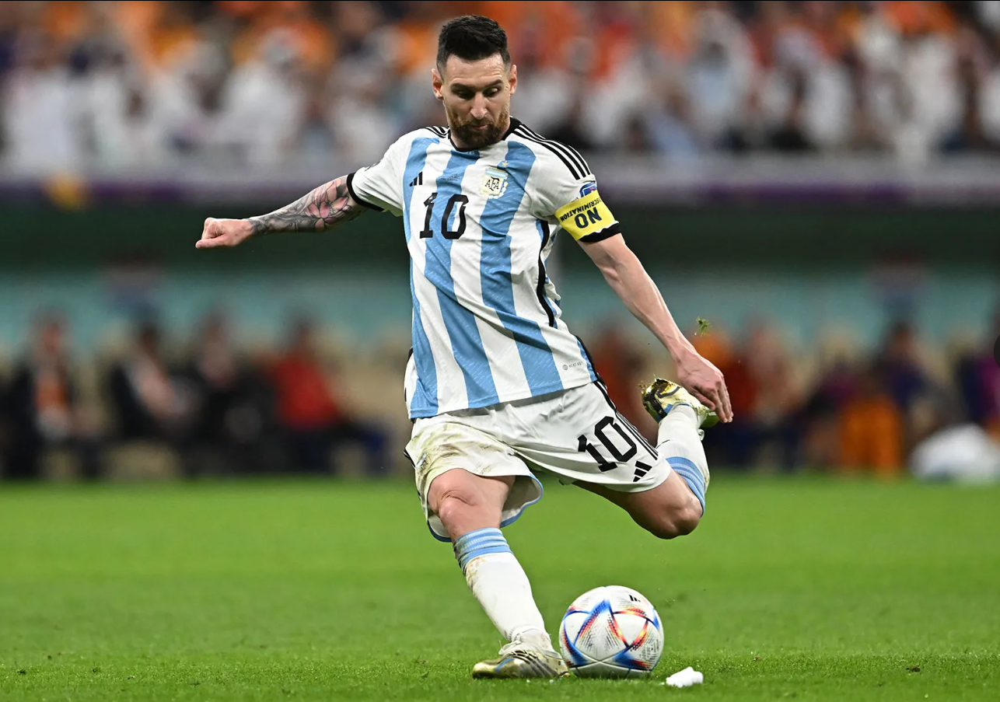
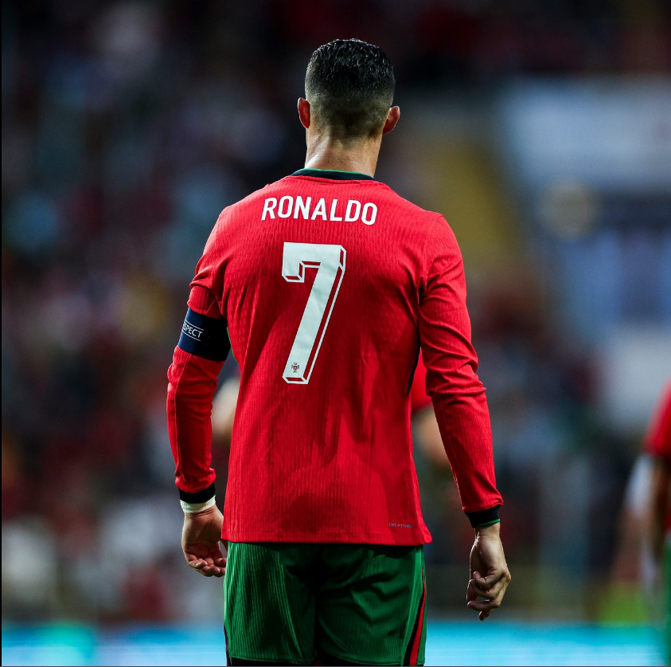
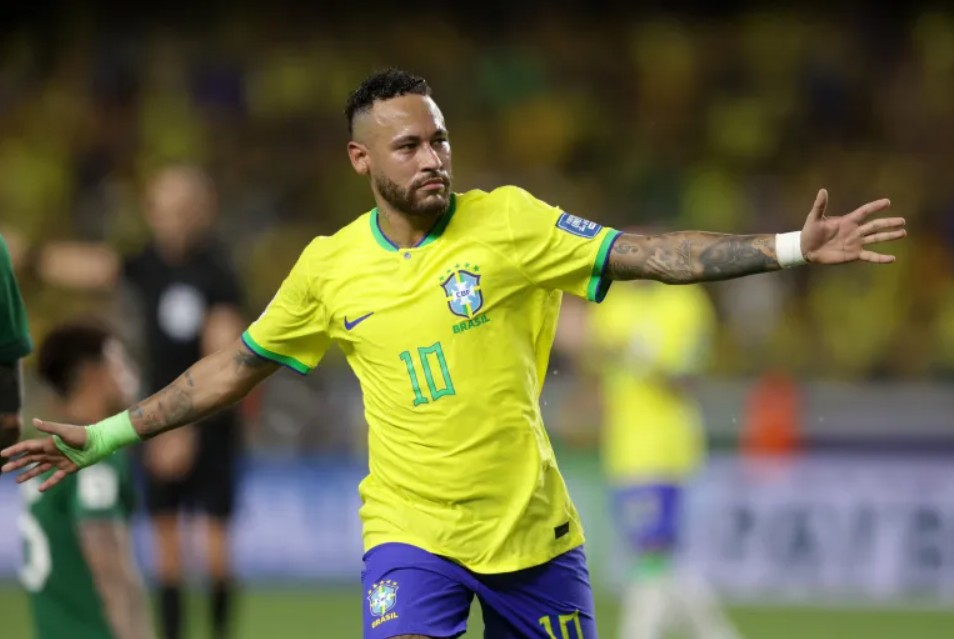

Lionel Messi
Position: Forward
Birthdate: June 24, 1987
Nationality: Argentine
Clubs: FC Barcelona, Paris Saint-Germain
Biography: Lionel Messi began his career with FC Barcelona, where he became a symbol of the club's success. His extraordinary vision, dribbling, and goal-scoring ability made him one of the most dominant players of his era. Messi's move to Paris Saint-Germain in 2021 marked a new chapter in his storied career. Off the pitch, Messi is known for his philanthropy and dedication to his family.
- Winning the UEFA Champions League with FC Barcelona in 2006 and 2009
- Scoring a record 91 goals in a calendar year (2012)
- Leading Argentina to the Copa America title in 2021
Cristiano Ronaldo
Position: Forward
Birthdate: February 5, 1985
Nationality: Portuguese
Clubs: Manchester United, Real Madrid, Juventus, Al-Nassr
Biography: Cristiano Ronaldo's career is marked by his exceptional goal-scoring ability and athleticism. Starting at Sporting CP, Ronaldo's talent quickly attracted the attention of Manchester United, where he developed into one of the world's best. His time at Real Madrid solidified his reputation, while his subsequent moves to Juventus and Al-Nassr continued to demonstrate his incredible skill and dedication. Ronaldo is also known for his charitable work and business ventures.
Manchester United: 118 goals in 292 appearances
Real Madrid: 450 goals in 438 appearances
Juventus: 101 goals in 134 appearances
Al-Nassr: 15 goals in 24 appearances (as of 2024)
Portugal National Team: 127 goals in 202 appearances
- Winning the UEFA Champions League with Manchester United in 2008 and with Real Madrid in 2014, 2016, and 2017
- Becoming Real Madrid's all-time top scorer
- Leading Portugal to victory in the Euro 2016 and the 2019 UEFA Nations League
Neymar Jr.
Position: Forward
Birthdate: February 5, 1992
Nationality: Brazilian
Clubs: Santos, FC Barcelona, Paris Saint-Germain
Biography: Neymar Jr. rose to prominence with Santos FC in Brazil, showcasing his exceptional skill and flair. His move to FC Barcelona was marked by a prolific partnership with Messi and Suárez, leading to significant success. At Paris Saint-Germain, Neymar has continued to be a key player and an influential figure in global football. Known for his dazzling skills and creative play, Neymar is also a prominent figure in the fashion world and social media.
Santos: 136 goals in 225 appearances
FC Barcelona: 105 goals in 186 appearances
Paris Saint-Germain: 112 goals in 154 appearances (as of 2024)
Brazil National Team: 77 goals in 124 appearances
- Winning the UEFA Champions League with FC Barcelona in 2015
- Being named South American Footballer of the Year twice
- Scoring a stunning goal in the 2014 FIFA World Cup